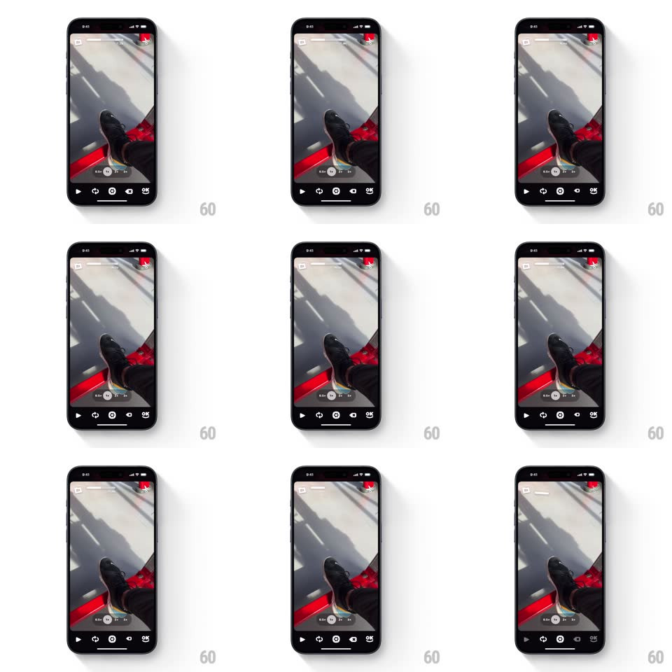

Media
Frame-by-frame

Rebuild this interaction 1:1: OK Video's delete-clip - tapping the scissors icon makes the last segment of the top progress bar collapse inward and vanish while an "UNDO" pill appears at the bottom, the total time readout updating with it.

Rebuild this interaction 1:1: OK Video's delete-clip - tapping the scissors icon makes the last segment of the top progress bar collapse inward and vanish while an "UNDO" pill appears at the bottom, the total time readout updating with it.
## Integration
Integration: stack-agnostic spec - springs given as stiffness/damping, timed motions as duration + curve; map every value to your framework and animation library of choice.
## Scene
Camera viewfinder. Top: a segmented progress bar (white clip segments, last one red with an x). Bottom: control bar with a scissors icon, a speed row (1x 2x 3x) and a clip time readout ("0:01").
## Motion spec
Pattern: collapsing clip segment with undo affordance.
- Tap the scissors: the icon does a quick snip (blades rotate -20deg and back, 200ms) and the red target segment flashes white once (80ms).
- The segment then collapses: it shrinks horizontally into its left neighbor (350ms, ease-in-out, accelerating) while the remaining segments slide left to reclaim the space (spring ~300/22) - the bar re-settles with one fewer segment.
- Simultaneously the time readout rolls down to the new total (digit roll, 300ms).
- An "UNDO" pill rises from the bottom (spring ~380/18, 10px rise), holds 4s with a draining underline, then slides back down.
- Tapping UNDO reverses the exact animation: the segment grows back (350ms) and segments redistribute.
## Calibration
- The collapse direction is INTO the previous clip - deletion pulls the bar shorter, never pops the segment out.
- The scissors snip is the only skeuomorphic moment; everything else is geometry.
## Reduced motion
Segment crossfades out; UNDO pill fades in.
## Don't miss
- The whole delete is reversible and the reversal replays the animation backwards - no state jump either direction.
- The readout updates DURING the collapse, so time math is legible as it happens.